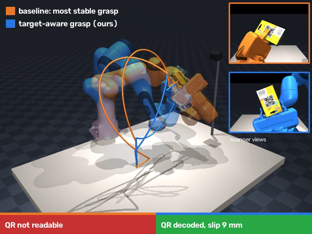
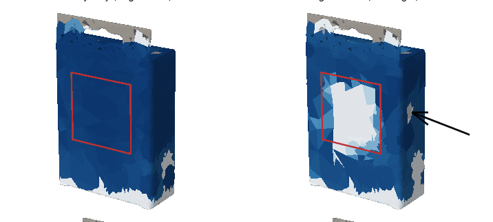
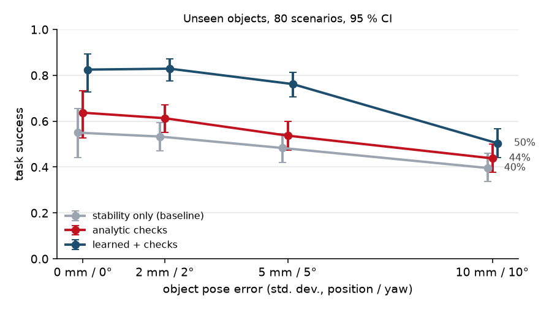

Grasp-to-Show: target-aware grasp selection
Aghyad Ali · M2 MiSCIT, Université Grenoble Alpes · solo project, simulation (MuJoCo, Franka Panda) · github.com/AghyadA1/grasp-to-show
Result. Choosing the grasp for the whole task (pick, carry, show a QR label to a scanner) instead of
for stability alone raises task success from 51 % to 70 % in 160 simulated scenarios (paired 42 wins / 12 losses,
p = 5×10−5, reproduced on Windows). A network trained on 14,502 simulated episodes reaches 85 %
on unseen objects (baseline 55 %, analytic checks 65 %), and scores a grasp in 50 µs on a laptop GPU.

Same box, same start. Orange: most stable grasp, a finger hides the QR. Blue: target-aware grasp, decoded. 3D gripper paths drawn.

Goal-conditioned heatmap: where grasping works for this target (right) vs a target-blind stability map (left). Arrow: gravity at the target.

Unknown pose error at execution: the learned choice keeps its lead up to 5 mm / 5°.
Problem
Grasp planners pick the most stable grasp and ignore what comes next. To show a label to a scanner (a routine
logistics step), the fingers must not cover it, the arm must reach the presentation pose with that grasp, and the
grasp must still hold when gravity acts in a new direction in the object frame. One grasp fixes the arm configuration at
the target through Tworld,tcp = Tworld,obj Tobj,tcp.
Method
- Ground truth: full episode in MuJoCo (force-limited gripper, soft-finger contacts); success = QR decoded by
OpenCV from the scanner image, object held, slip < 20 mm / 15°, no collision.
- Five analytic checks per grasp, both 180° twins and 12 target poses: lift and target stability
(soft-finger friction model, solved for the friction utilisation; AUC 0.92–0.94 vs simulation, no fitted
parameters), reach at start and target (analytic IK, ported to numpy and C++ with two bug fixes), QR visibility by ray casting.
- Learned scorer: PointNet on the object cloud in the gripper frame + gravity and poses at start and target,
trained on full-episode outcomes, split by object; a variant also takes the checks' outputs.
- Heatmap (way A): score ~3,200 candidates per target and paint each grasp's score on its contacts (19 s).
- 40 Google Scanned Objects (30 train / 10 test), 5,225 simulated lift labels, C++17 kernels (nanobind, 2.4–7×).
Results
| Policy | 160 scen. | unseen, 80 |
|---|
| Most stable grasp (baseline, kinematics checked) | 51 % | 55 % |
| Analytic checks 1–5 (min normalised margin) | 70 % | 65 % |
| without the QR-visibility check | 52 % | – |
| Learned, geometry only | – | 76 % |
| Learned + checks' outputs | – | 85 % |
Validation of the checks on 865 episodes: success 73 % when they predict feasible vs 21 % when not (recall 95 %).
19 % of the grasps a stability-only planner accepts cannot complete the task. The learned gain is almost all
slip during the motion (18 → 2 failures), which static margins cannot see. Over 5 training seeds the
scorer's AUC is 0.82 ± 0.01 (checks: 0.72).
Lessons
- Validate the simulator first. With default contact softness, held objects crept 13 mm in a gentle transit;
stiffer grasp contacts cut it 5× and lifted the stability model's AUC from 0.80 to 0.93.
- Fix the rule before the experiment. A tie-break changed after seeing one demo lowered success from 70 % to
61–63 % on two machines; the rule fixed beforehand stays the primary result.
- Know the limit. At 10 mm / 10° pose error every policy collapses (open-loop approach hits the object):
re-detection before grasping, not grasp choice, is the fix.
Next
Way B: a dense goal-conditioned network that predicts the heatmap directly (Contact-GraspNet style), judged by the
simulated success of its top grasp. Then dexterous hands, regrasping, and unknown shapes.